11 OI Reference¶
11.1 Navigation¶
The Applicator OI presents information across three regions: a fixed header at the top, a fixed navigation bar at the bottom, and a main screen area that changes based on the selected tab. The header and navigation bar remain visible on every screen.
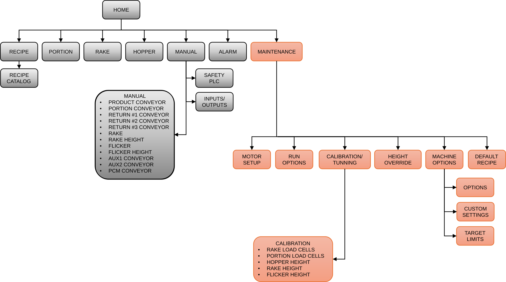
Note
Items shown in gray are accessible to all operators (DEFAULT login). Items shown in orange require a Maintenance login (GROTE).
Header¶
| Display | Description |
|---|---|
| Active recipe | Recipe number and name currently loaded. |
| Current user | Active login level: DEFAULT or GROTE. |
| Status banner | Banner reflecting the current Applicator state. See Section 11.12: Applicator Status Banner. |
| Date and time | Current system date and time. |
| Screen Title | Text identifying the currently active screen. |
Navigation bar¶
| Control | Description |
|---|---|
| Manual access | Scan QR code to open this Operation Manual. |
| Language switch | Toggles the OI language. |
| Back | Returns to the previous screen. |
| Tab row | Selects the active screen. |
Note
The active screen button turns yellow. The ALARM ACTIVE button flashes red when any alarm is present and returns to normal when all alarms are cleared.
11.2 HOME Screen¶
The HOME screen is the primary operating screen. It provides machine start and stop controls, operating mode selection, and tension system controls. See Section 4: Operating Modes.
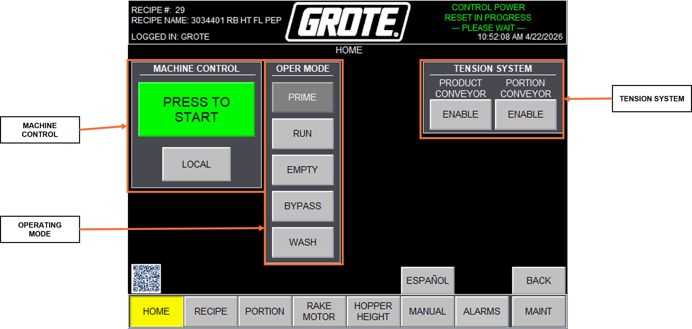
| Control | Description |
|---|---|
| Machine Control | PRESS TO START/STOP pushbutton. The LOCAL / REMOTE selector. See Section 3: STARTUP |
| Operation Mode | Selects the operating mode: See Section 4: Operating Modes |
| Tension System | Enables or disables the tension cylinders. See Section 3: STARTUP |
11.3 RECIPE Screen¶
The RECIPE screen provides recipe management. Editable fields are highlighted in yellow or green. See Section 5: Recipe Setup and Appendix A: Recipe Starting Points.
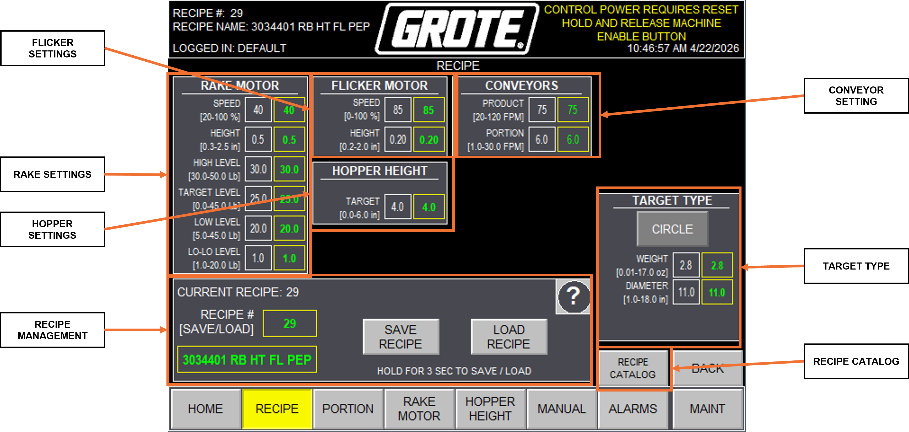
| Field Group | Description |
|---|---|
| Rake Settings | RAKE HEIGHT and TARGET LEVEL setpoints. |
| Flicker Settings | FLICKER SPEED and FLICKER HEIGHT setpoints. |
| Hopper Height | HOPPER TARGET fill height. Maximum 6.0 in. |
| Conveyor Settings | Speed setpoints for all conveyors. |
| Target Type | Product designation for recipe identification. |
| Recipe Catalog | Load, copy, rename, or delete stored recipes. |
| Recipe Management | Save or create recipes. |
11.4 PORTION Screen¶
The PORTION screen monitors the portion weight PID loop. For control logic and tuning, see Section 6.5: PORTION CONVEYOR PID Control.
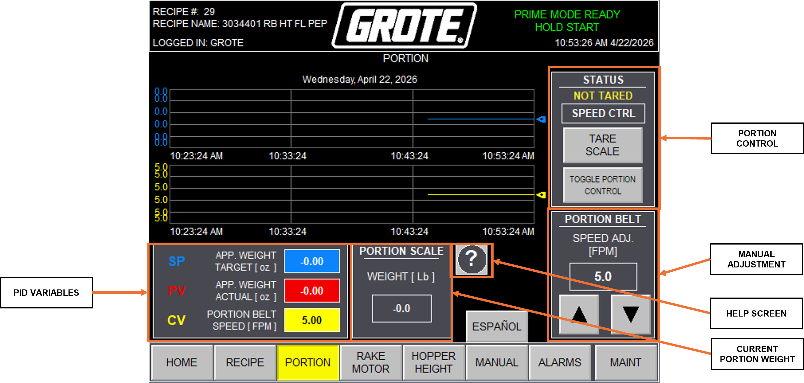
| Control / Display | Description |
|---|---|
| SP | Setpoint: target applied weight per portion (oz). Set in the active recipe. |
| PV | Process variable: actual applied weight (oz) from the PORTION LOAD CELL. |
| CV | Control variable: PORTION CONVEYOR speed output from the PID loop (FPM). |
| Weight trend | Real-time chart of applied portion weight. Use to assess PID response and portion consistency. |
| TOGGLE PORTION CONTROL | Enables or disables the portion weight PID loop. When disabled, PORTION CONVEYOR runs at the manual speed value. |
| TARE SCALE | Zeros the PORTION LOAD CELL. Tare with no target on the belt and no topping falling. |
| Manual speed | Manual PORTION CONVEYOR speed (FPM). Active only when PORTION CONTROL is disabled. |
11.5 RAKE Screen¶
The RAKE screen monitors the RETURN #2 PID loop. For control logic and tuning, see Section 6.4: RETURN #2 PID Control.
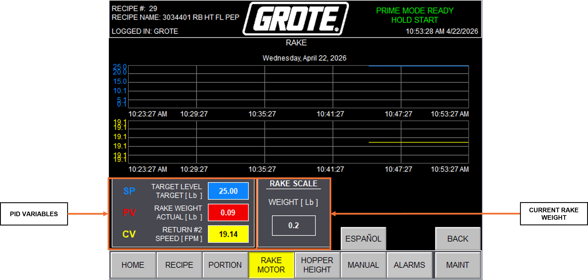
| Control / Display | Description |
|---|---|
| RAKE WEIGHT AVERAGE (red trend) | Rolling average of RAKE LOAD CELL weight (lb). The RETURN #2 PID loop adjusts belt speed to hold this value at TARGET LEVEL. |
| TARGET LEVEL (blue trend) | Target topping level setpoint (lb). Set in the active recipe. |
| RETURN #2 SPEED (yellow trend) | Live RETURN #2 belt speed (FPM). PID output. |
| SP | Setpoint: target RAKE weight (lb). |
| PV | Process variable: actual RAKE WEIGHT AVERAGE (lb). |
| CV | Control variable: RETURN #2 speed command (FPM). |
| RAKE SCALE | Raw RAKE LOAD CELL reading (lb) before averaging. Use during calibration and troubleshooting. See Section 8: Load Cell Calibration. |
11.6 HOPPER Screen¶
The HOPPER screen displays HOPPER fill level relative to the TARGET LEVEL set in the active recipe. For sensor calibration, see Section 9: Hopper Height Calibration.
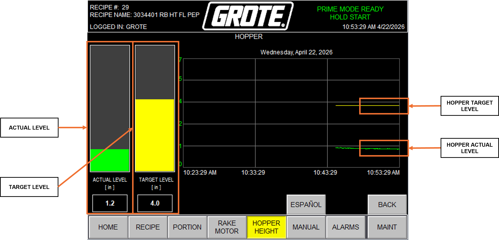
| Control / Display | Description |
|---|---|
| ACTUAL LEVEL | Current HOPPER fill height from the HOPPER HEIGHT SENSOR (in). |
| TARGET LEVEL | Target HOPPER fill height from the active recipe (in). |
| Level bar graph | Visual comparison of ACTUAL LEVEL versus TARGET LEVEL. |
| Level trend | Historical fill level chart. Displays 30 minutes of data at a 2-second sample rate. |
11.7 MANUAL Screens¶
The MANUAL screens provide access to individual drive service screens and system diagnostic screens.
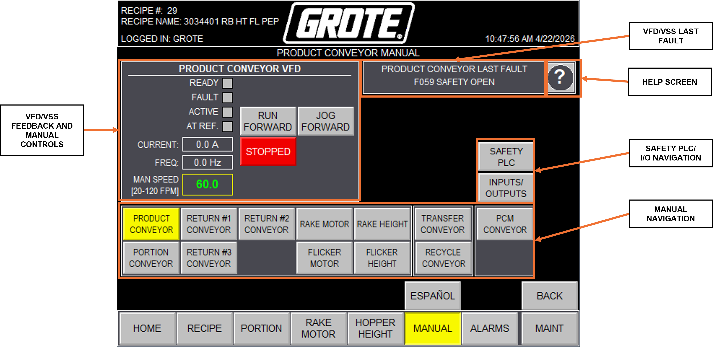
| Sub-screen | Function |
|---|---|
| [Drive] SERVICE | Per-drive diagnostic and control screen. Displays MOTOR SCALING limits, CUSTOMER ENTRY LIMITS, VFD / VSS status, current (A), frequency (Hz), live speed (FPM), and last fault code. Provides RUN FORWARD, JOG FORWARD, and MANUAL FUNCTIONS controls for testing drives outside a production mode. Press Help (?) for PowerFlex 525 fault code definitions. See Section 7: Motor Speed Scaling. |
| SAFETY PLC | Real-time status of all safety circuit devices. Each device shows OPEN or CLOSED: OI E-STOP, REM OI E-STOP, MAIN CONV E-STOP, PCM CONV E-STOP, MAIN GUARD SWITCH, and RETURN #2 GUARD SWITCH. Use this screen to identify which device is preventing MACHINE ENABLE. |
| INPUTS/OUTPUTS | Real-time status of all digital inputs and outputs. Inputs include MACHINE ENABLE, DOWNSTREAM interlock, lane photoeyes (LN1 / LN2 / LN3), guard switches, E-stop devices, and limit switches. Outputs include UPSTREAM interlock, solenoids, SHREDDER INTERLOCK, and STACKLIGHT signals. |
11.8 ALARMS Screen¶
The ALARMS screen logs active and historical alarm events. For alarm conditions and corrective actions, see Section 12.6: Alarm Conditions Reference.
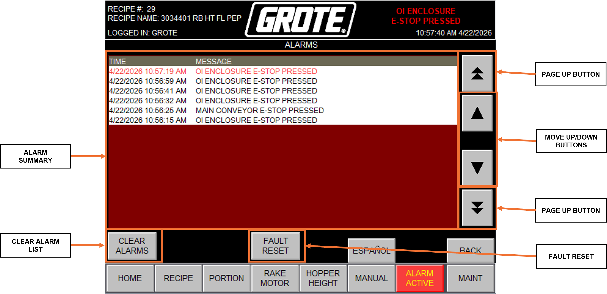
| Control / Display | Description |
|---|---|
| Alarm list | Timestamped list of alarm events. Most recent alarms appear at the top. |
| FAULT RESET | Clears latched faults. |
| ALARM ACTIVE tab | Flashes red when an alarm is present. |
11.9 MAINT Screens¶
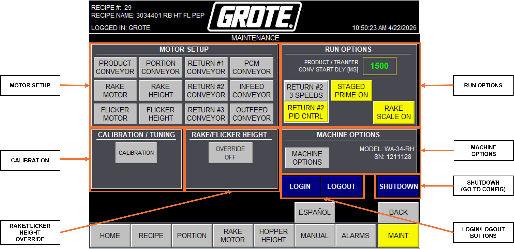
Motor Setup sub-screens are documented in Section 11.10. Calibration sub-screens are documented in Section 11.11.
| Sub-screen | Function |
|---|---|
| MOTOR SETUP | Per-drive scaling and limit configuration. See Section 11.10 and Section 7: Motor Speed Scaling. |
| CALIBRATION | Load cell and height sensor calibration. See Section 11.11. |
| HOPPER | Sets HOPPER OVERSHOOT HEIGHT and HOPPER HEIGHT SENSOR customer entry limits. |
| MACHINE OPTIONS | Enables or disables optional equipment and configuration settings. See Section 11.14. |
| RUN OPTIONS | Runtime behavior settings. Contact Grote Company Field Service before modifying. |
11.10 Motor Setup Screens¶
Each drive has a dedicated Motor Setup screen. Changes here affect the limits on the corresponding MANUAL → [Drive] SERVICE screen. See Section 7: Motor Speed Scaling.
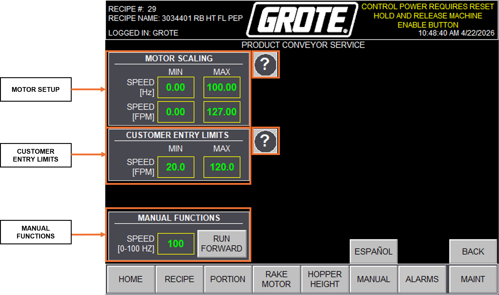
All Motor Setup screens share the following fields:
| Field | Description |
|---|---|
| MOTOR SCALING | Sets MIN and MAX operating speed in Hz, mapped to engineering units (FPM or %) on operator screens. |
| CUSTOMER ENTRY LIMITS | Sets the MIN and MAX speed values operators can enter on recipe and manual control screens. |
| MANUAL FUNCTIONS | Manually drives the conveyor outside a production mode. Enter speed in Hz and press RUN FORWARD. |
PRODUCT CONVEYOR / PCM CONVEYOR / RAKE / FLICKER¶
These drives use the common field set above. No additional fields apply.
PORTION CONVEYOR¶
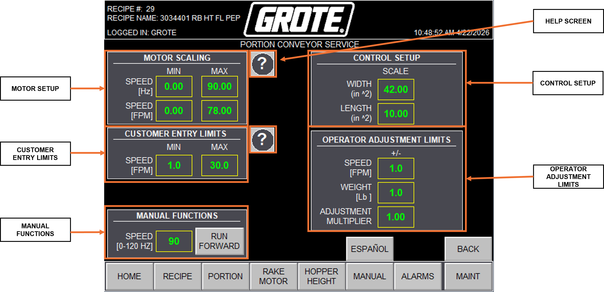
| Field | Description |
|---|---|
| CONTROL SETUP | Defines the active belt area for applied weight calculations. See Section 6.5. |
| OPERATOR ADJUSTMENT LIMITS | Sets the allowable speed adjustment range on the PORTION screen. See Section 5. |
RAKE HEIGHT MOTOR / FLICKER HEIGHT MOTOR¶
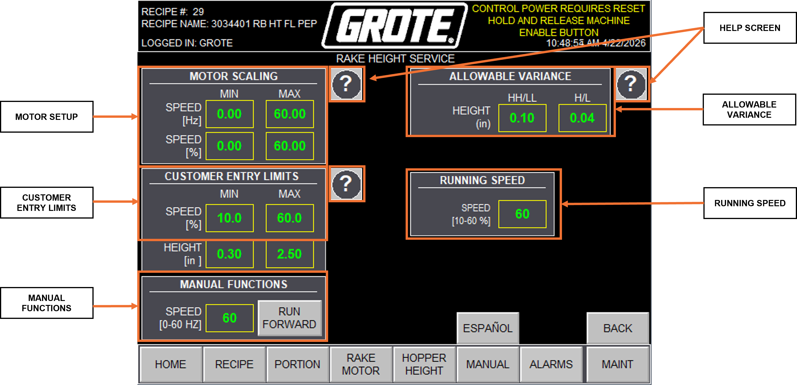
| Field | Description |
|---|---|
| ALLOWABLE VARIANCES | Position tolerance band for height moves. Positioning is complete when the encoder reading falls within this band of the recipe setpoint. |
| RUNNING SPEED | Height motor travel speed. Recommended: 60%. |
Note
Current Applicators use encoders for RAKE HEIGHT and FLICKER HEIGHT position feedback. Earlier Applicators used potentiometers and proximity limit switches; those machines retain a POTENTIOMETER OVERRIDE screen in MAINT.
RETURN #1 / RETURN #3¶
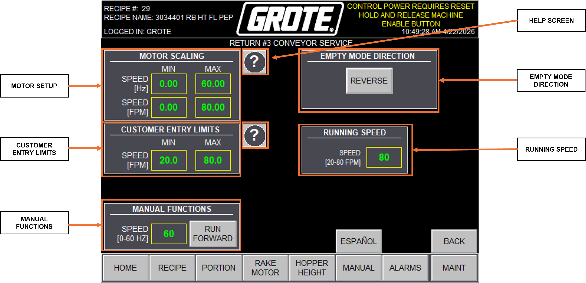
| Field | Description |
|---|---|
| EMPTY MODE DIRECTION | Selects conveyor direction during EMPTY mode. See Section 4.4: EMPTY Mode. |
| RUNNING SPEED | Target belt speed. Recommended: 80 FPM. |
RETURN #2¶
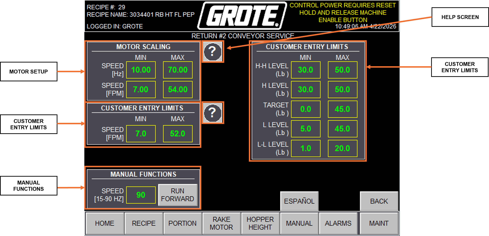
| Field | Description |
|---|---|
| CUSTOMER ENTRY LIMITS (LOAD CELL) | Sets the MIN and MAX weight limits for the RAKE LOAD CELL operating range. See Section 5.1. |
AUX 1 / AUX 2¶
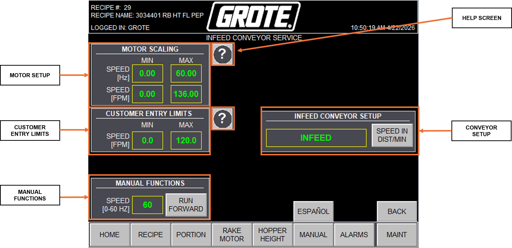
| Field | Description |
|---|---|
| CONVEYOR SETUP | Sets the name and speed unit (FPM or %) for each AUX conveyor. |
11.11 Calibration Screens¶
All calibration screens share a common navigation tab row for switching between calibration types. See Section 8: Load Cell Calibration, Section 9: Hopper Height Calibration, and Section 10: Rake/Flicker Height Calibration for step-by-step procedures.
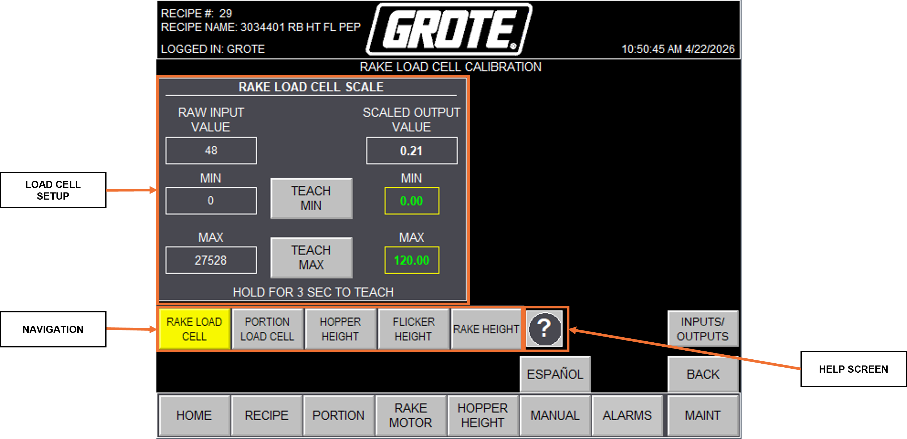
RAKE LOAD CELL / PORTION LOAD CELL¶
| Field | Description |
|---|---|
| LOAD CELL SETUP | Captures MIN and MAX calibration points. Hold TEACH MIN for 3 seconds at the minimum reference load; hold TEACH MAX for 3 seconds at the maximum reference load. See Section 8. |
HOPPER HEIGHT¶
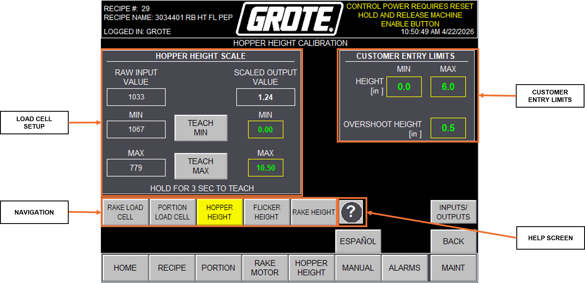
| Field | Description |
|---|---|
| HOPPER HEIGHT SETUP | Captures MIN and MAX calibration points for the HOPPER HEIGHT SENSOR using the same TEACH MIN / TEACH MAX method. See Section 9. |
| CUSTOMER LIMITS | Sets the allowable HOPPER TARGET entry range. See Section 6.2. |
RAKE HEIGHT / FLICKER HEIGHT¶
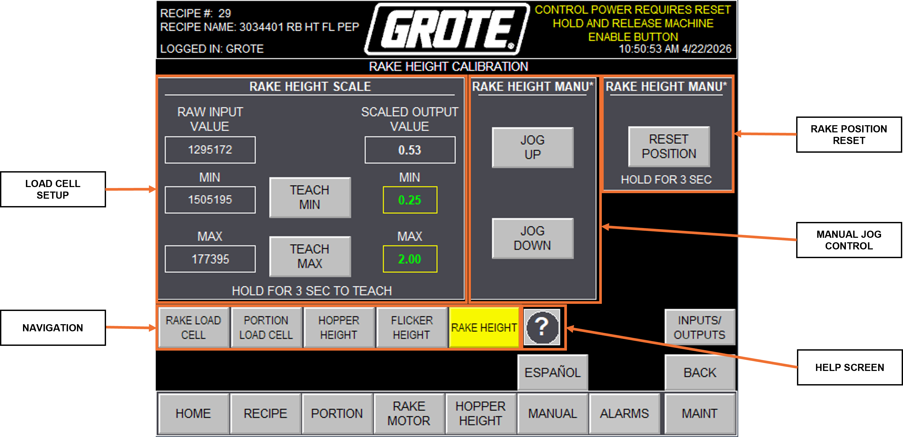
| Field | Description |
|---|---|
| RAKE HEIGHT SETUP / FLICKER HEIGHT SETUP | Establishes the height travel range using encoder position references. See Section 10. |
| HEIGHT MANUAL CONTROL | Jogs the height motor UP or DOWN for positioning during calibration. |
| HEIGHT POSITION RESET | Resets the encoder reference position to zero. Use after encoder replacement or position loss. |
11.12 Applicator Status Banner¶
The Applicator Status Banner appears at the top of every screen and updates continuously to reflect the current Applicator state. For mode-by-mode behavior, see Section 4: Operating Modes.
| Banner Message | Color | Condition |
|---|---|---|
| MACHINE FAULTED GO TO ALARMS SCREEN |
RED | Active fault. Navigate to ALARMS screen and press FAULT RESET after correcting each condition. |
| MAJOR FAULT EXISTS MACHINE STOPPED CHECK ALARMS |
RED | Critical fault. Applicator stopped. Navigate to ALARMS screen. |
| LOCAL MODE ONLY FUNCTION PUT MACHINE IN LOCAL MODE |
RED | A LOCAL-only function was attempted in REMOTE mode. Switch to LOCAL at the HOME screen. |
| OI ENCLOSURE E-STOP PRESSED | RED | Emergency stop active at OI enclosure. Pull the actuator to reset, then press MACHINE ENABLE. |
| PRODUCT CONVEYOR E-STOP PRESSED | RED | Emergency stop active at PRODUCT CONVEYOR. Pull the actuator to reset, then press MACHINE ENABLE. |
| INFEED CONVEYOR E-STOP PRESSED (WHEN EQUIPPED) | RED | Emergency stop active at INFEED CONVEYOR. Pull the actuator to reset, then press MACHINE ENABLE. |
| OUTFEED CONVEYOR E-STOP PRESSED | RED | Emergency stop active at OUTFEED CONVEYOR. Pull the actuator to reset, then press MACHINE ENABLE. |
| REMOTE OI ENCLOSURE E-STOP PRESSED (WHEN EQUIPPED) | RED | Emergency stop active at remote OI. Pull the actuator to reset, then press MACHINE ENABLE. |
| MAIN GUARD OPEN | RED | MAIN GUARD is open. Close the guard fully, then press MACHINE ENABLE. |
| RETURN #2 GUARD OPEN | RED | RETURN #2 guard is open. Close the guard fully, then press MACHINE ENABLE. |
| CONTROL POWER REQUIRES RESET HOLD AND RELEASE MACHINE ENABLE BUTTON |
YELLOW | Control power requires reset. Hold and release the MACHINE ENABLE button. |
| CONTROL POWER RESET IN PROGRESS - PLEASE WAIT - |
YELLOW | Control power reset sequence in progress. Wait for completion. |
| MOVING RAKE AND FLICKER INTO POSITION - PLEASE WAIT - |
YELLOW | RAKE and FLICKER are moving to recipe positions. Wait for travel to complete. |
| ENABLE PRODUCT BELT TENSION | YELLOW | PRODUCT CONVEYOR tension cylinder is not extended. Enable from the HOME screen. |
| ENABLE PORTION CONVEYOR TENSION | YELLOW | PORTION CONVEYOR tension cylinder is not extended. Enable from the HOME screen. |
| MACHINE REQUIRES PRIME BEFORE RUN MODE ALLOWED |
YELLOW | Priming criteria not met. Select PRIME mode and complete the priming sequence before selecting RUN. |
| MACHINE STARTED IN REMOTE MODE WAITING FOR DOWNSTREAM INTERLOCK |
YELLOW | Applicator started in REMOTE mode. Waiting for downstream interlock signal. |
| REMOTE RUN MODE STOPPED FROM OI HOLD START TO RESTART |
YELLOW | Applicator stopped from the OI while in REMOTE mode. Hold PRESS TO START to restart. |
| REMOTE RUN MODE STOPPED FROM LINE CONTROLLER OI HOLD START TO RESTART |
YELLOW | Applicator stopped by the line controller while in REMOTE mode. Hold PRESS TO START to restart. |
| ---- PRIME COMPLETED ---- REMOTE RUN MODE READY HOLD START |
YELLOW | Priming complete. Applicator in REMOTE mode and ready to start. Hold PRESS TO START. |
| MACHINE RUNNING CONSERVE MODE ACTIVE |
YELLOW | No target detected within the CONSERVE timer period. All motors except PRODUCT CONVEYOR, INFEED CONVEYOR, and OUTFEED CONVEYOR stopped. Clears when a target is detected. See Section 4.7. |
| MACHINE RUNNING | GREEN | Applicator running in RUN mode. Topping application active. |
| MACHINE RUNNING IN PRIME MODE | GREEN | PRIME mode sequence executing. |
| MACHINE RUNNING IN EMPTY MODE | GREEN | Applicator in EMPTY mode. |
| MACHINE RUNNING IN LOCAL BYPASS MODE | GREEN | PRODUCT CONVEYOR running without topping application. LOCAL control. |
| MACHINE RUNNING IN REMOTE BYPASS MODE | GREEN | PRODUCT CONVEYOR running without topping application. REMOTE control. |
| MACHINE RUNNING IN WASH MODE | GREEN | Applicator in WASH mode at preset speeds and heights. |
| ---- PRIME COMPLETED ---- LOCAL RUN MODE READY HOLD START |
GREEN | Priming complete. Applicator in LOCAL mode and ready to start. Hold PRESS TO START. |
| PRIME MODE READY HOLD START | GREEN | PRIME mode selected and ready. Hold PRESS TO START for three seconds. |
| EMPTY MODE READY HOLD START | GREEN | EMPTY mode selected and ready. Hold PRESS TO START for three seconds. |
| BYPASS MODE READY HOLD START | GREEN | BYPASS mode selected and ready. Start the Applicator. |
| WASH MODE READY HOLD START | GREEN | WASH mode selected and ready. Hold PRESS TO START for three seconds. |
Note
Two banner messages currently display "HMI" on the OI screen instead of "OI." These will be corrected in a future PLC revision. This manual uses "OI" throughout for consistency.
11.13 STACKLIGHT Reference¶
The STACKLIGHT provides at-a-glance Applicator status visible from across the production floor.
| Indicator | State | Meaning |
|---|---|---|
| HORN | Pulsing | Applicator starting |
| RED | Blinking | Not enabled |
| RED | Solid | Faulted |
| YELLOW | Blinking | Low topping level |
| YELLOW | Solid | Topping level empty |
| GREEN | Blinking | Ready to run |
| GREEN | Solid | Running |
11.14 MACHINE OPTIONS Reference¶
MACHINE OPTIONS enables or disables optional equipment and configuration settings. Changes here affect which controls and PID loops are active throughout the OI.
| Option | Function | Default |
|---|---|---|
| IMPERIAL / METRIC | Sets the unit system for all weight and dimension readouts throughout the OI. | IMPERIAL |
| RAKE HEIGHT ADJ / NO RAKE HEIGHT ADJ | Enables or disables the RAKE HEIGHT MOTOR and associated controls. | RAKE HEIGHT ADJ |
| FLICKER HEIGHT ADJ / NO FLICKER HEIGHT ADJ | Enables or disables the FLICKER HEIGHT MOTOR and associated controls. | FLICKER HEIGHT ADJ |
| HOPPER SENSOR / NO HOPPER SENSOR | Enables or disables the HOPPER HEIGHT SENSOR input. | HOPPER SENSOR |
| PORTION SCALES / NO PORTION SCALES | Enables or disables the PORTION LOAD CELL inputs and PORTION PID loop. | PORTION SCALES |
| RAKE SCALES / NO RAKE SCALES | Enables or disables the RAKE LOAD CELL inputs and RETURN #2 PID loop. | RAKE SCALES |
| SHREDDER CONTROL / NO SHREDDER | Enables or disables the SHREDDER interlock output and automated fill sequence. | NO SHREDDER |
| PCM CONV / NO PCM CONV | Enables or disables the PCM conveyor option. | NO PCM CONV |
| AUX 1 CONV / NO AUX 1 CONV | Enables or disables the AUX 1 auxiliary conveyor. | NO AUX 1 CONV |
| AUX 2 CONV / NO AUX 2 CONV | Enables or disables the AUX 2 auxiliary conveyor. | NO AUX 2 CONV |
| SPEED FOLLOW / NO SPEED FOLLOW | Enables or disables the external speed follow (line synchronization) input. | NO SPEED FOLLOW |
Custom Settings¶
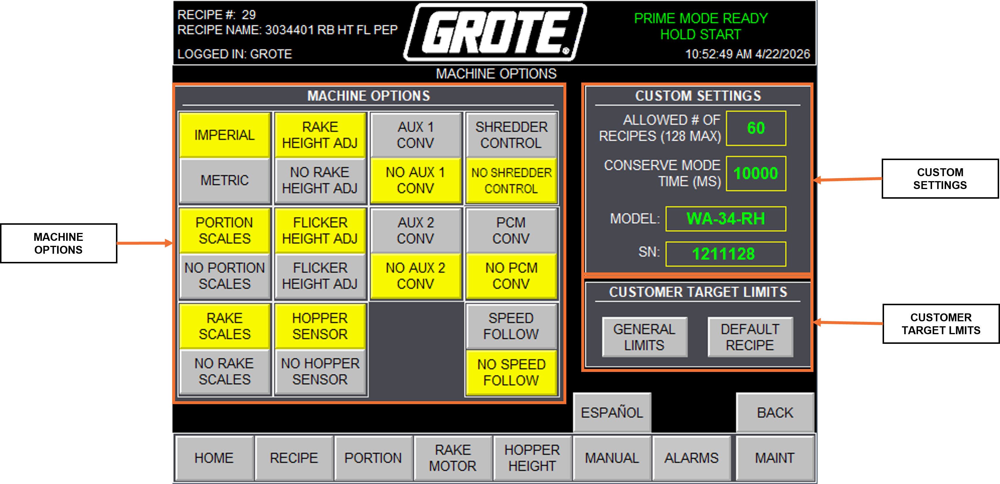
| Setting | Description |
|---|---|
| ALLOWED # OF RECIPES | Maximum number of stored recipes. System supports up to 128. |
| CONSERVE MODE TIME (MS) | CONSERVE timer duration (ms). Set based on target travel time from the lane photoeye to the drop point at operating line speed. See Section 4.7: CONSERVE Mode. |
| Applicator model | Read-only. Applicator model number. |
| Serial number | Read-only. Applicator serial number. |
General Limits¶
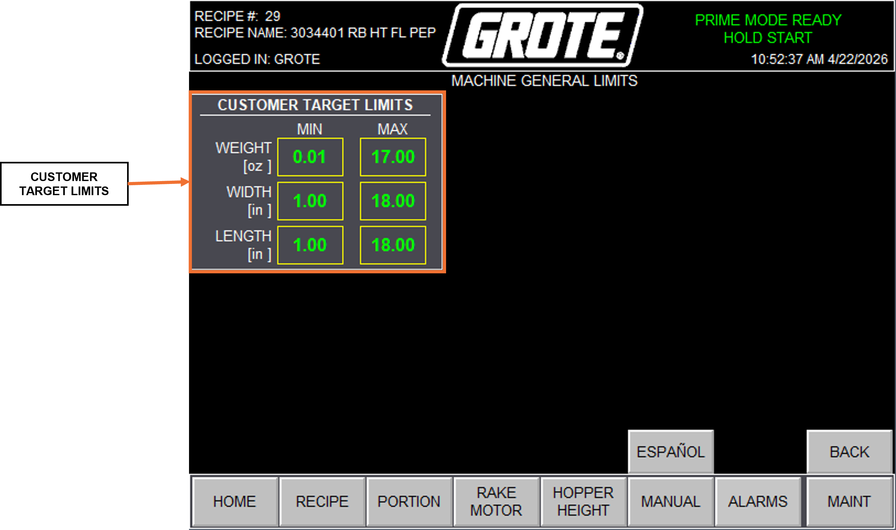
| Field | Description |
|---|---|
| Target dimensions | Minimum and maximum target length and width (in). |
| Product limits | Minimum and maximum applied topping weight per target. |
Default Recipe¶
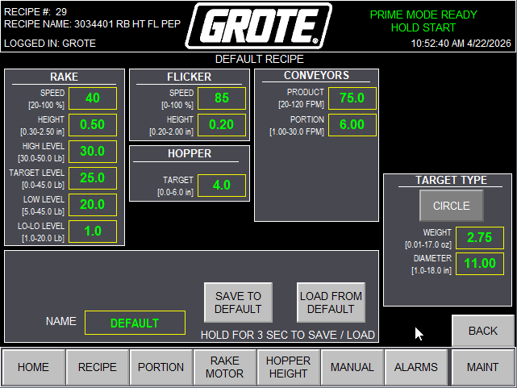
| Field | Description |
|---|---|
| Default recipe | Saves the currently loaded recipe as the system default. The default recipe loads automatically at startup. |